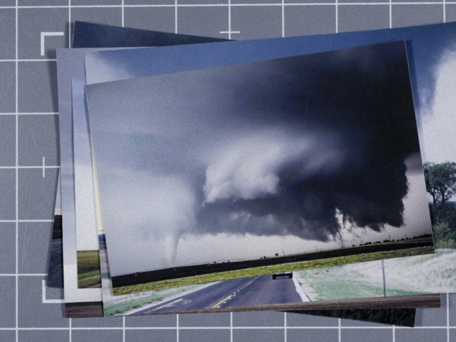

A Brief History of Chasing Storms Screening
As both a witty, digressive essay film and an American road movie, A BRIEF HISTORY OF CHASING STORMS explores the way that tornadoes and other extreme weather events shape the geography and the cultural identity of the Midwest. Miller’s travels across the Great Plain region take him from areas devastated during the 1970 multi-vortex tornado in Lubbock, Texas, to a TWISTER-themed museum exhibit in the small town of Wakita, Oklahoma, and a myriad of impacted sites along the way. Through encounters with amateur meteorologists, local historians, elected officials, and storm-shelter salesmen, Miller subtly interrogates what it means to make images in the eye of the storm and how those images live on in collective memory for years after.
This program will be introduced by Robin Tanamachi, atmospheric scientist who specializes in radar-based studies of severe storms and tornadoes, storm chaser, and Associate Professor in the Department of Earth, Atmospheric, and Planetary Sciences at Purdue University.
Following the screening, filmmaker Curtis Miller (Lecturer in Art, Theory, Practice at Northwestern University), will participate in a Q&A with the audience.
About the guest speakers:
Curtis Miller is a filmmaker and artist based in Chicago, IL. His work often takes the American Midwest as both site and subject. His films have screened internationally at Visions du Réel, IDFA, DMZ Docs, Glasgow Short Film Festival, Alchemy Film and Moving Image Festival, Antimatter, EXiS, and the Chicago International Film Festival, as well as the Hyde Park Arts Center, Gallery 400, and the Renaissance Society, among others. In 2025, he was named one of Filmmaker Magazine’s “25 New Faces of Independent Film.” A Brief History of Chasing Storms is Miller’s first feature.
Robin Tanamachi is a research meteorologist and Associate Professor in the Department of Earth, Atmospheric, and Planetary Sciences at Purdue University. She specializes in radar-based studies of severe storms and tornadoes, numerical analysis, and atmospheric science education research. Robin has participated in numerous research studies, including VORTEX2 and VORTEX-SE.